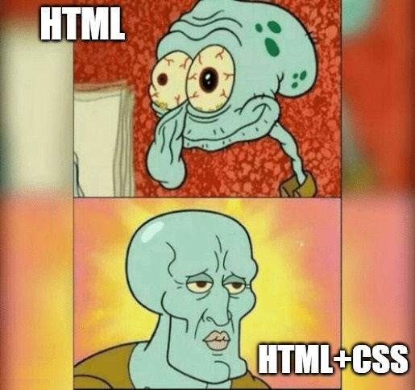

HTML, siglas de HyperText Markup Language (Lenguaje de Marcado de Hipertexto), es el estándar fundamental para crear y estructurar páginas web
br (Break): Inserta un salto de línea simple dentro de un párrafo o texto, útil para direcciones o versos.
hr (Horizontal Rule): Crea una línea horizontal temática que separa secciones de contenido.

Para mas informacion visitar estos enlaces
W3Schools